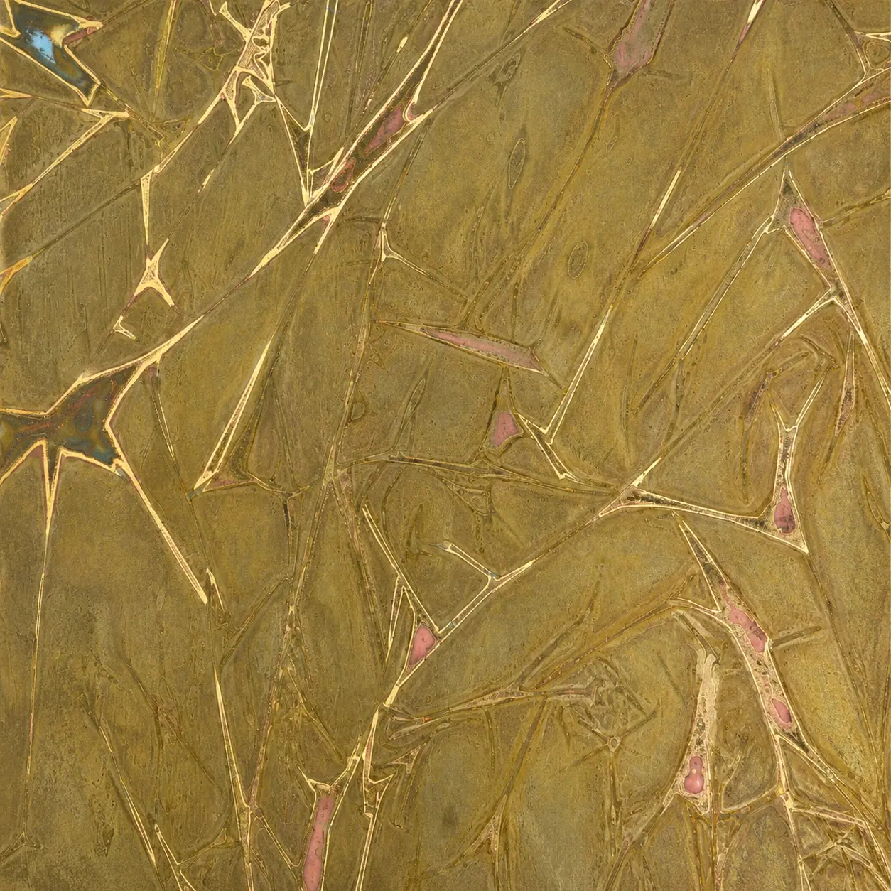
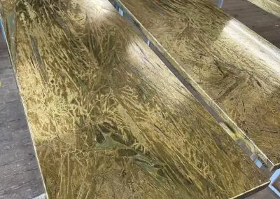
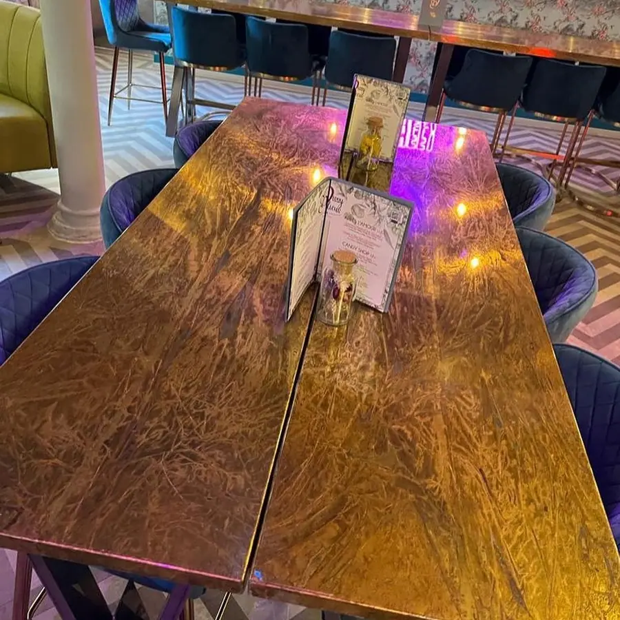
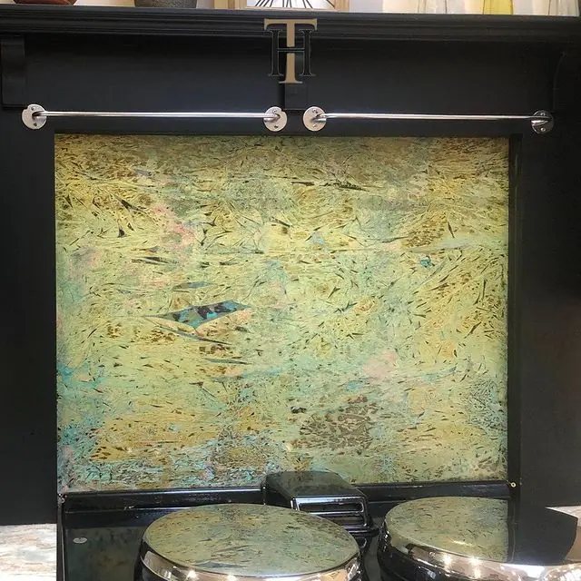
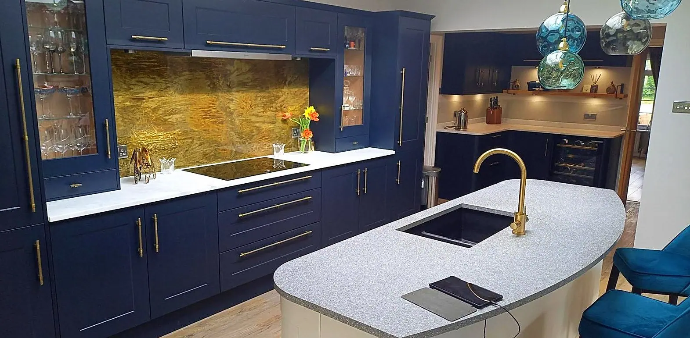

Somerset Finish
Stained glass brass
We’re particularly proud of this creation, a bold showstopper of a look that will become the focal point of any room. Named after the rolling, patchwork countryside of sun-soaked Somerset, this unique aged brass features a unique pattern of swirls and shards. You’ll see varying shades of gold, and we can even imbue it with subtle hints of pink, blue and green.
We hand-age quality brass sheets in our Newcastle workshop, liaising with you to ensure we achieve the look you have in mind. Once that look is achieved, we seal in matte or gloss.
Somerset is one of our most popular finishes for kitchen splashbacks, but it also works wonderfully on tabletops, feature walls and anywhere else deserving of a spectacular aesthetic.
Made for you in Somerset Finish
Somerset Finish in people’s homes




If you can dream it, we’ll make it.
Bars, balustrades, staircases, worktops, cladding and pieces that don’t have a name yet. Our designers and craftspeople work in brass, copper, zinc and steel, and alongside wood.